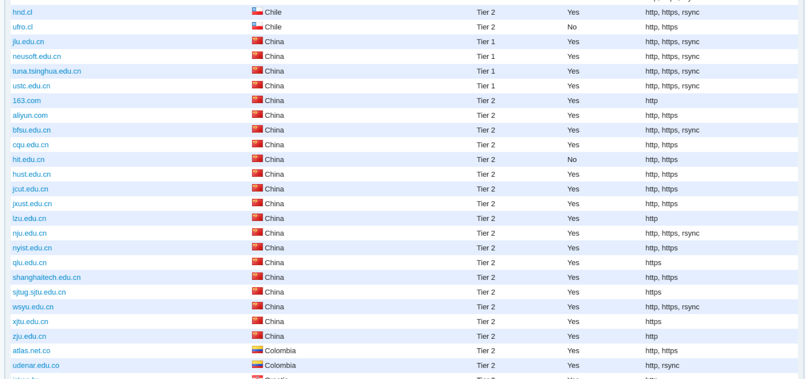
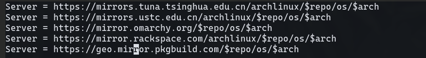

备份原来的 /etc/pacman.d/mirrorlist
sudo mv /etc/pacman.d/mirrorlist /etc/pacman.d/mirrorlist.bak
添加镜像源到 /etc/pacman.d/mirrorlist
自动换源
reflector 是一个 archlinux 官方提供的 python 脚本，它可以从 archlinux 镜像状态页面检索最新的镜像列表，过滤最新的镜像，按速度对它们进行排序并覆盖文件 /etc/pacman.d/mirrorlist。
# 安装 reflector
sudo pacman -S reflector
# 获取国内最快的10个镜像源
sudo reflector --country 'China' --latest 10 --sort rate --save /etc/pacman.d/mirrorlist
这样就大功告成了!
手动换源
如果喜欢折腾可是试试手动换源。
首先找一个合适的镜像源。
可以访问 archlinux 的官网镜像地址库：Mirror Overview，查看好用的镜像源。

然后编辑 /etc/pacman.d/mirrorlist
sudo vim /etc/pacman.d/mirrorlist
将镜像源添加到里面保存退出即可。
下面是我的配置

Server = https://mirrors.tuna.tsinghua.edu.cn/archlinux/$repo/os/$arch
Server = https://mirrors.ustc.edu.cn/archlinux/$repo/os/$arch
Server = https://mirror.omarchy.org/$repo/os/$arch
Server = https://mirror.rackspace.com/archlinux/$repo/os/$arch
Server = https://geo.mirror.pkgbuild.com/$repo/os/$arch
更新包缓存
无论是用 reflector 还是手动编辑 /etc/pacman.d/mirrorlist，
完成后都要更新包缓存，不然是无法使用新镜像源的。
sudo pacman -Syyu
💬 评论